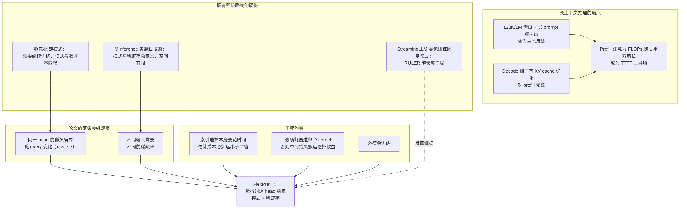
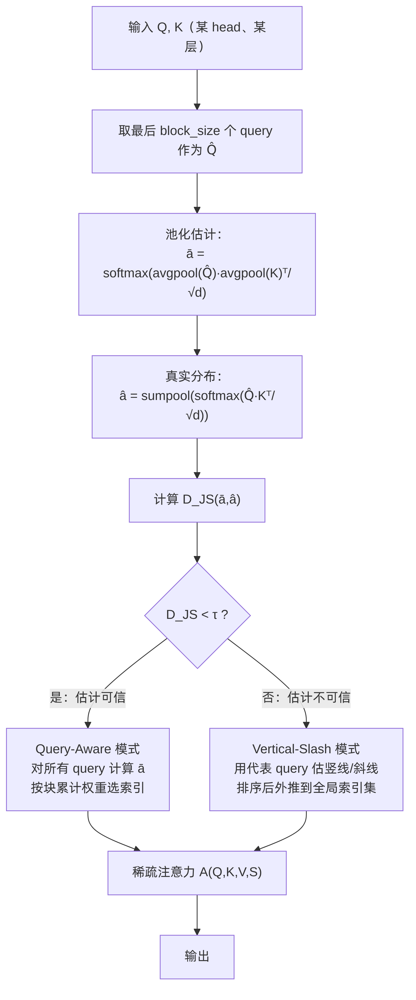
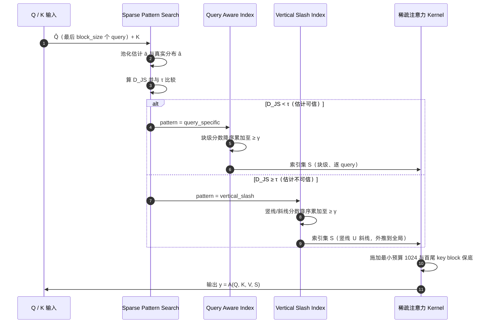
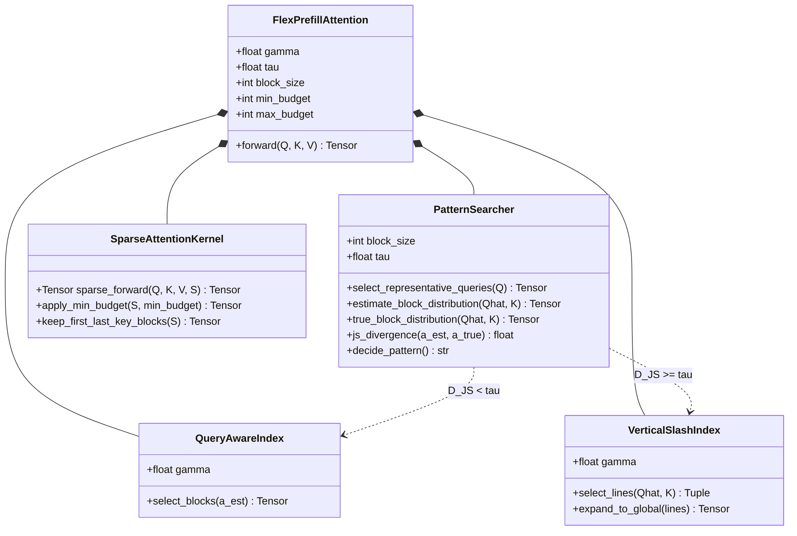
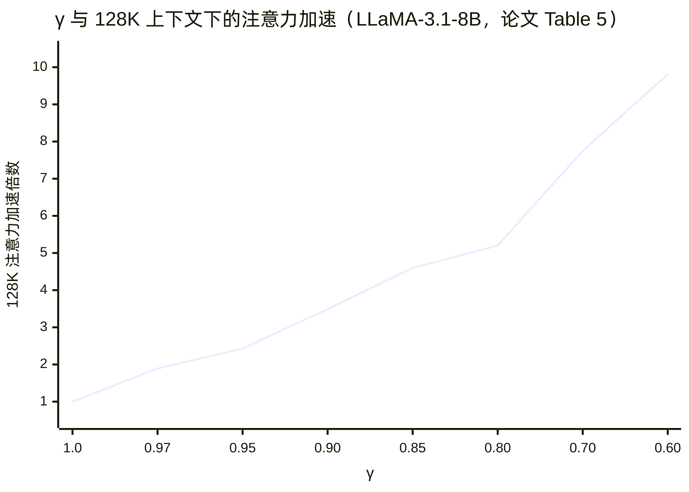
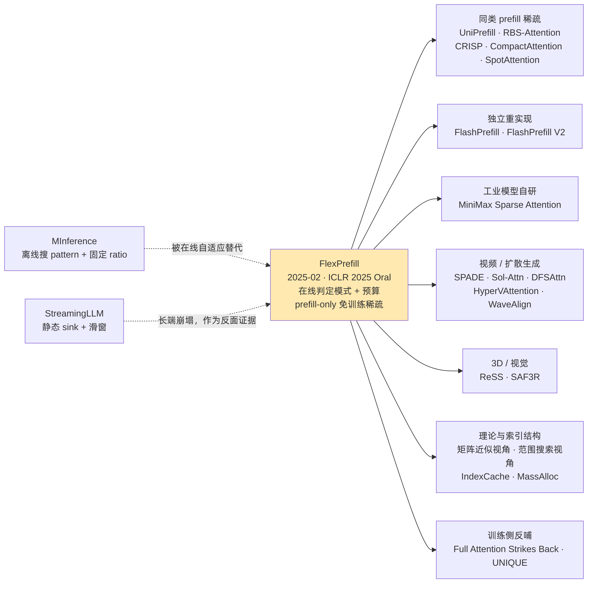

ByteDance Seed FlexPrefill 技术洞察 · 图表预览
对应文档：Seed-FlexPrefill-技术洞察.md ｜ 渲染源：assets/mmd/*.mmd
图 1 · 长上下文推理痛点与稀疏路线硬伤（§1.5）

fp-d1-problem-map
图 2 · 两级在线判定：模式（τ）与预算（γ）（§2.2.3）

fp-d2-pattern-decision
图 3 · 算法时序图（§2.4，UML sequenceDiagram）

fp-d3-algo-sequence
图 4 · 类图（§2.5，UML classDiagram）

fp-d4-class
图 5 · γ 与 128K 加速的权衡曲线（§2.7.3）

fp-d5-gamma-tradeoff
图 6 · 引用生态与扩散方向（§3.4）

fp-d6-citation-map